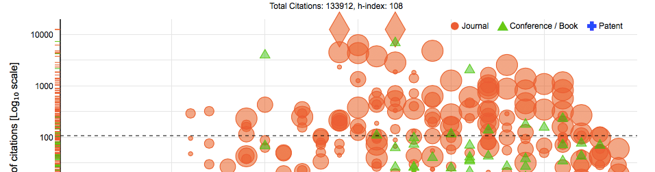
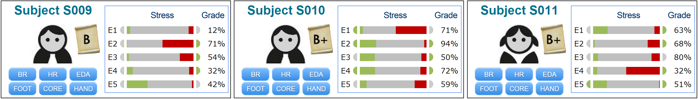

About Me
My name is Karl Kwon. I'm a data geek and data visualization architect at EPE Innovations in Dallas, Texas. Before joining EPE, I was a research assistant at the Computational Physiology Lab at the University of Houston where I received my Ph.D. in Computer Science. I previously held a full-time senior software engineer position for five years in Seoul, Korea. While there, I worked in a team and used to implement enterprise software crunching big data.
My interests are to tackle data wrangling, data analytics, and data visualization. I am a quick learner and I’m able to rapidly get up to speed in a new environment. I would love to work on problems at a large scale. I’m a down-to-earth who is passionate about technology, loves a good technical conversation, and I’m excited to work with others like me.
Highlighted Projects
# Scholar Plot
Scholar Plot is an online data visualization tool. It retrive the Google Scholar profile and use its dataset to plot. It also fetches NSF/NIH/NASA funding dataset to depict indivisual's grant awards.
Git # User Portrait
Scholar Plot is an onlice data visualization tool. It retrive the Google Scholar profile and use its dataset to plot. It also fetches NSF/NIH/NASA funding dataset to depict indivisual's grant awards.
Git 